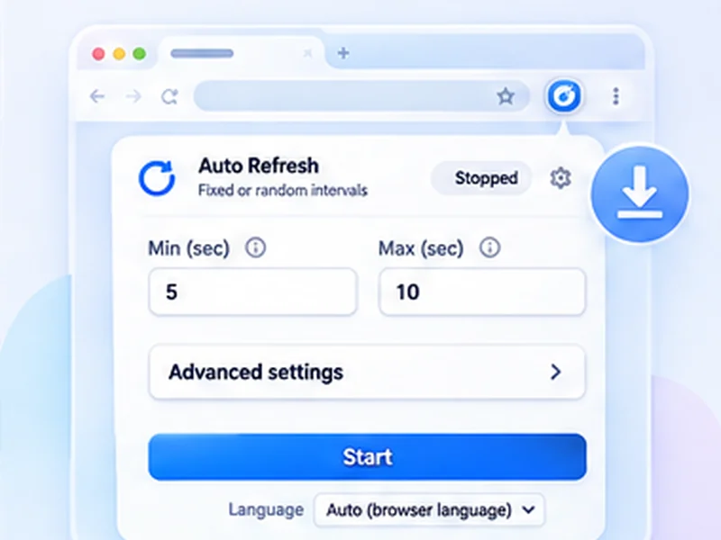

Auto refresh for Firefox, free and private.
The same extension as on Chrome, built for Firefox: a refresh timer, page watching, alerts and seven languages.

How firefox add-on works
The same extension as on Chrome, built for Firefox: a refresh timer, page watching, alerts and seven languages.
Firefox blocks add-ons on about: pages and on addons.mozilla.org. Everything else works.
Quick setup
Open the Firefox Add-ons listing and click Add to Firefox.
Approve the permissions prompt.
Open a page, click the icon, set an interval and press Start.
A Firefox auto reload add-on
Firefox has no auto refresh setting. This add-on reloads the tab you choose on a fixed or random timer, and can stop and notify you when the page changes. It is the same extension as the Chrome version, with every feature.
Built with Firefox's privacy rules in mind
The add-on declares to Mozilla that it collects no data, and it makes no network requests. Its packaged code is readable and matches the public source.
Tips for Firefox
- Change the shortcut under Add-ons, the gear menu, Manage Extension Shortcuts.
- To stop a website refreshing itself, see how to stop auto refresh.
- The hard refresh shortcut in Firefox is Ctrl + Shift + R.
How to auto refresh a tab in Firefox, step by step
Install the add-on from Firefox Add-ons and approve the permissions. Open the page, click the extensions button in the toolbar and choose Free Auto Refresh, or pin it first for one-click access. Choose an interval and press Start.
Press Alt+Shift+R to stop. To change the shortcut, open Add-ons and themes, click the gear icon, and choose Manage Extension Shortcuts.
Why choose this Firefox auto reload add-on
- Everything is free, including random intervals and page watching.
- No data collection, declared to Mozilla and checkable in the source.
- Readable code. Nothing is minified or loaded from a server.
Troubleshooting in Firefox
It does not run on a page
Firefox blocks add-ons on about: pages and on addons.mozilla.org.
It does not work in private windows
Allow it under Add-ons, Free Auto Refresh, Run in Private Windows.
Firefox asks about a page refreshing itself
That is Firefox's own refresh blocker; see how to stop auto refresh.
At a glance
- Same features as Chrome. One codebase, so both browsers get every feature at the same time.
- No data collected. The add-on declares that it collects nothing, and it makes no network requests.
- Open source. Read the code on GitHub before you install.
Questions, answered.
How do I auto refresh a tab in Firefox?
Install the add-on, open the page, click the icon, set an interval and press Start.
Is it the same as the Chrome version?
Yes, the same code and features.
Does it work in private windows?
Only if you allow it to run in private windows in the add-on's settings.
Which Firefox version do I need?
Firefox 140 or newer on desktop.
Does it work on Firefox for Android?
Not yet. It is built and tested for desktop Firefox.
Install it in ten seconds.
Free for Chrome and Firefox. No account, no ads, no tracking.
Not seeing the feature you need?
Share the browser task you would like to make easier. Your idea helps guide what gets built next.